Tutorial de instalacion servidor SMTP
Marzo 25, 2023 posted por Juan E. Castro
Las siglas de FTP significan File Transfer Protocol, que se traduce como Protocolo de Transferencia de Archivos. Como su nombre indica, se trata de un protocolo que permite transferir archivos directamente de un dispositivo a otro.
Requisitos:
- Programa ThunderBird en el cliente
- Direccion Ip estatica
- Maquina virtual Windows Server 2012
- Maquina virtual con Window XP, 7, 8, 8.1
Paso 1: Creacion de nuevo host, CNAME e Intercambiador de correos.
La creacion de estos tres elementos se realizara en un servidor de DNS previamente configurado, en nuestro caso tenemos uno ya configurado. La configuracion de estos elementos sera la siguiente.
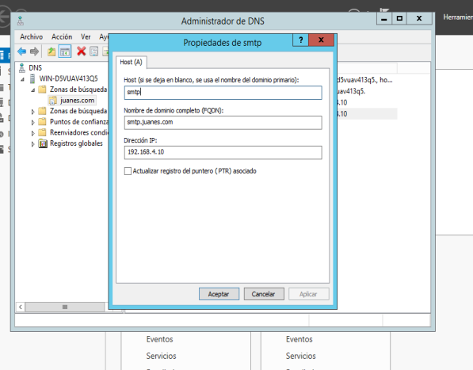 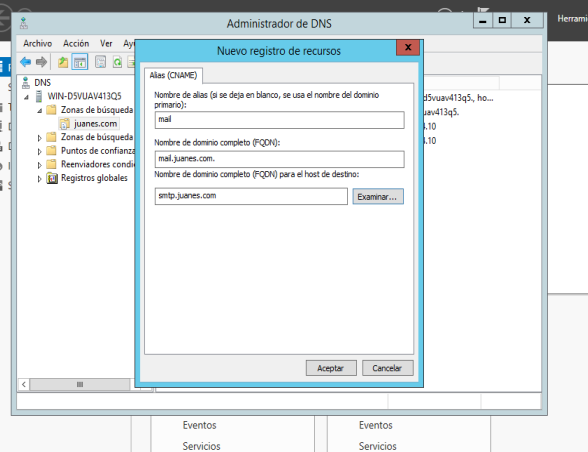 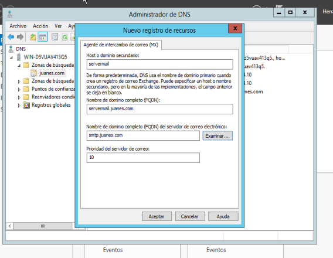Paso 2: Instalacion del programa Mercury.
Se procede con la instalacion del programa Mercury el cual nos ayudara a montar nuestro servidor SMTP. La intalacion se realiza de manera normal como cualquier otro programa.
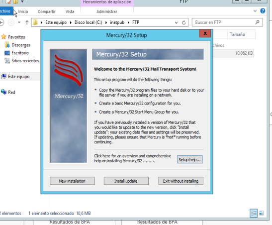Paso 3: Configuracion de Mercury.
Luego de finalizar la instalacion del programa, procedemos a realizar la configuracion del mismo. Accedemos primero en la parte de configuracion y la opcion Mercury core module. Alli verificamos que nuestra direccion Ip sea la correcta.
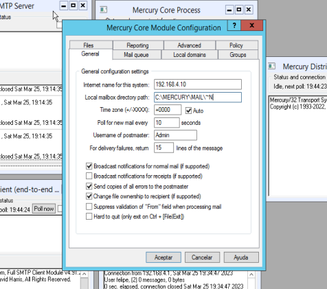Paso 4: Configuracion Mercury - Local Domains.
Continuando con la configuracion de Mercury, en la misma ventada del paso anterior accedemos a la pestaña Local Domains. Alli agregaremos los siguientes dominios si no los tenemos, siempre colocando la Ip de la maquina en la que estamos trabajando.
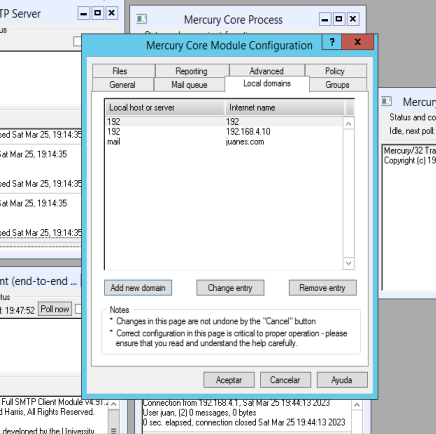Paso 5: Creacion de Usuarios.
La creacion de usuarios se realiza en la pestaña de configuracion, opcion Manage local users. En esta pestaña se crearan los usuarios que podran acceder al servidor SMTP.
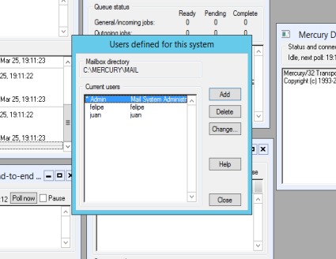 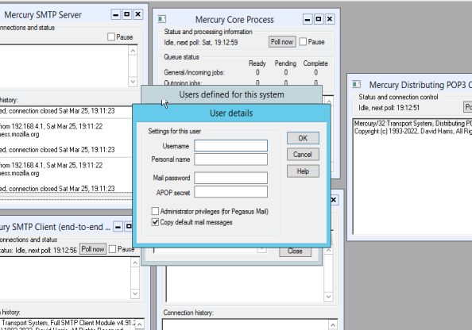Pruebas de funcionamiento del servidor SMTP.
La verificacion se realizara desde el lado del cliente utilizando el programa ThunderBird el cual nos permite ingresar al correo electronico creado a traves del servidor SMTP de una manera mas grafica. Al ingresar al programa seleccionaremos la opcion de email y alli llenaremos las credenciales de los usuarios que se crearon del lado del servidor en el programa Mercury, si el servicio esta funcionando nos permitira acceder al correo y realizar todas las tareas correspondientes.
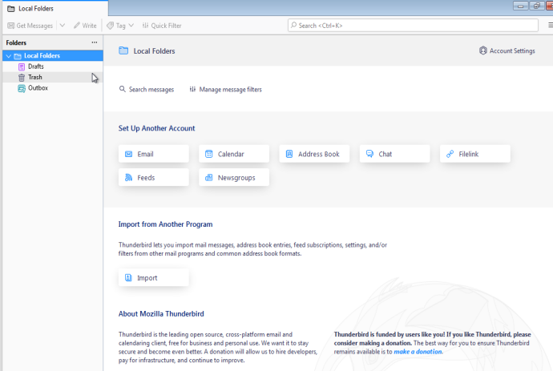 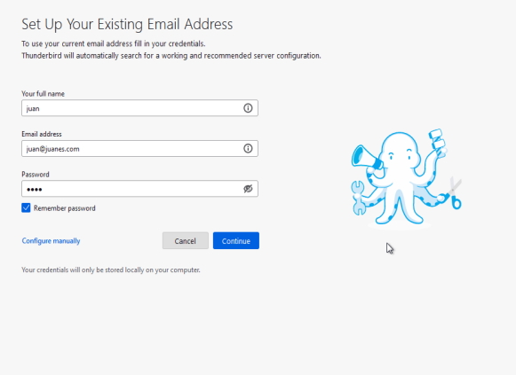 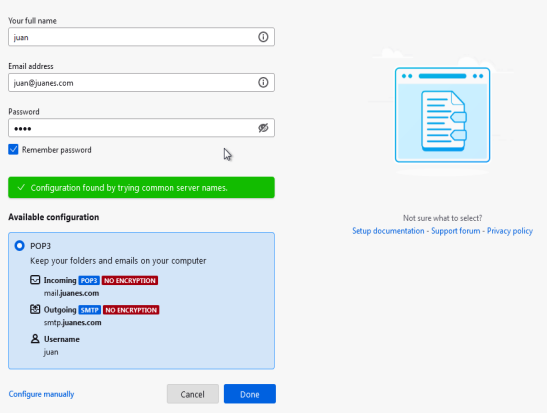 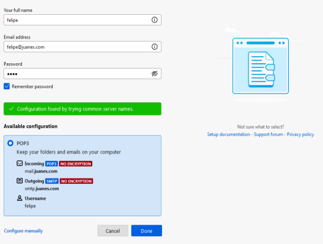